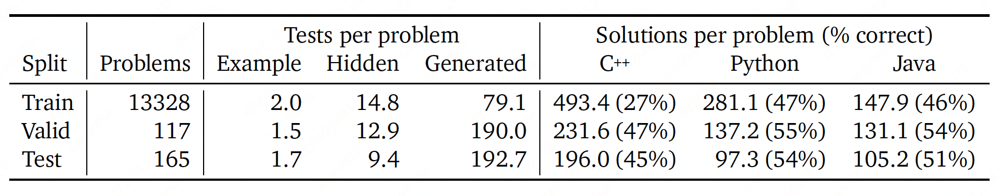
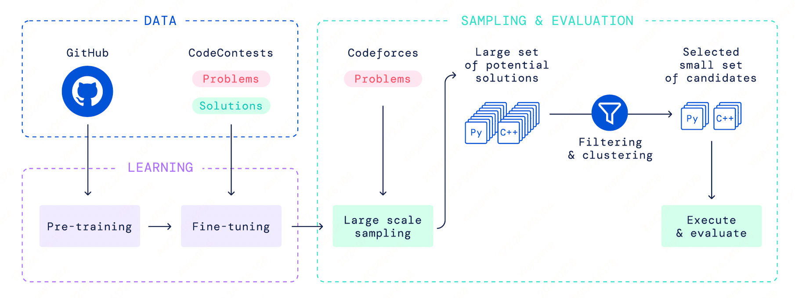
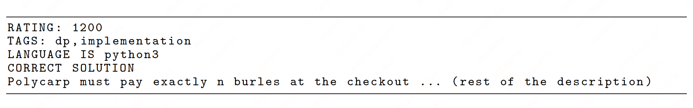

AlphaCode#
Note
In simulated evaluations on recent programming competitions on the Codeforces platform, AlphaCode achieved on average a ranking of top 54.3% in competitions with more than 5,000 participants.
Evaluation#
The metric we use is “percentage of problems solved using \(n\) submissions from \(k\) samples per problem”, denoted as \(n@k\).
Datasets#
Our pre-training dataset is based on a snapshot of selected public GitHub repositories.
Models pre-trained on GitHub can generate good code and solve simple programming problems, but they can solve very few competitive programming problems.
To facilitate fine-tuning and evaluation, we curated a new dataset of competitive programming problems, named CodeContests. The dataset includes problems, solutions and test cases we scraped from the Codeforces platform, along with existing public competitive programming datasets mixed into our training set.

Approach#
AlphaCode chooses an encoder-decoder transformer architecture. We pre-trained our models on the GitHub dataset with a standard cross-entropy next-token prediction loss for the decoder and a masked language modeling loss for the encoder. The masked language modeling loss was essential for improving the representation learning of the encoder.

Fine-tuning#
We fine-tuned our model on our CodeContests dataset. During fine-tuning, we used the natural language problem description for the encoder and the program solution for the decoder. Similar to pre-training, we used both the standard next-token prediction and masked language modeling losses. We also adopted additional conditioning and modifications that we found improved the overall solve rate: tempering, value conditioning and prediction, and GOLD.
Tempering. We use \(T=0.2 < 1\) at training. At sampling time, we divided the logits by another temperature \(T'\) tuned on the validation set.
Value conditioning & prediction. CodeContests contains both correct and incorrect problem submissions. We used value conditioning and prediction to discriminate between these two types of submissions. In value conditioning, we inserted whether or not a submission was correct into the problem description so that the model can condition on this information, At sampling time, the model was always conditioned on the sample being correct.

In value prediction, we added an auxiliary value prediction task during training such that the last layer token representations before projecting to logits are also used in a small Transformer to classify whether the submission is correct. Value prediction was not used during sampling.
GOLD. CodeContests contains several orders of magnitude more solutions than descriptions. Standard maximum likelihood objectives minimise loss by putting some weight on each solution in the training set, whereas our metric measures whether a model can find a single correct solution in the submission. To resolve this discrepancy, we adopted a variation of GOLD, an offline RL algorithm which allows the model to both learn from tokens it already assigns high likelihood to, and to ignore tokens that are not in its distribution.
Large scale sampling#
Sampling from transformer models can be easily parallelized, which allowed us to scale to millions of samples per problem – a critical driving force for performance improvement. To ensure sufficient diversity in such a large number of samples, we:
generate half of the samples in Python and half in C++,
randomize the problem tags and ratings in the natural language prompt,
use a relatively high sampling temperature.
Filtering#
One powerful tool for selecting these submissions is filtering samples to only those that pass the example tests given in the problem statement.
Clustering#
Filtering using example tests can still leave thousands of candidate programs per problem. Randomly picking from this pool wastes the limited submission budget on programs that are syntactically different but semantically equivalent. Semantically equivalent programs could be detected if we had additional test inputs, by executing all remaining programs on these inputs and grouping programs that produce the same outputs together into clusters. We could then avoid repeatedly picking from the same clusters.
After clustering on program behaviour we found that selecting one solution from each cluster from largest to smallest performed best.